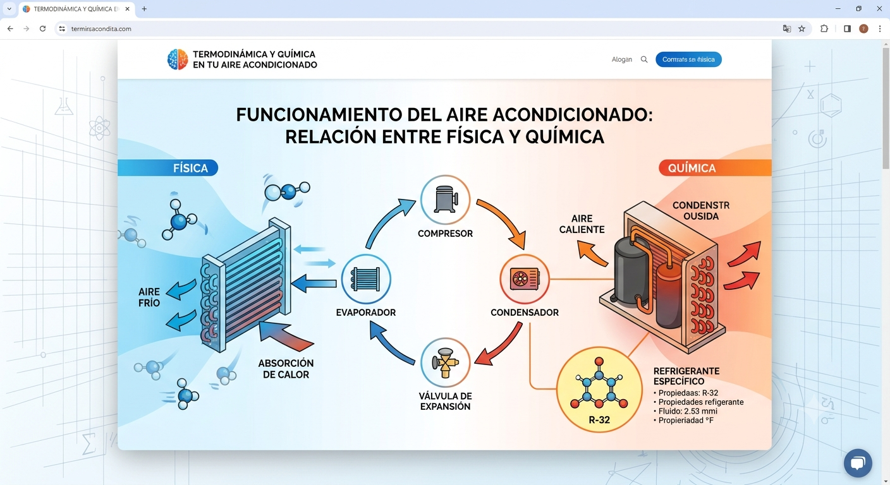

<!DOCTYPE html>
<html lang="es">
<head>
  <meta charset="UTF-8">
  <meta name="viewport" content="width=device-width, initial-scale=1.0">
  <title>PI - CAMACHO MORETAle>
  <link rel="stylesheet" href="style.css">
</head>

<body>
  <header>
    <div class="logo-box">
      
      <h1>PI - APELLIDO1 APELLIDO2</h1>
    </div>

    <nav>
      <a href="#inicio">Inicio</a>
      <a href="#conexion">Física + Química</a>
      <a href="#fuentes">Fuentes</a>
      <a href="#concepto">Concepto</a>
      <a href="#reflexion">Reflexión</a>
      <a href="contenido.html">Contenido</a>
    </nav>
  </header>

  <main>
    <section id="inicio" class="hero">
      <h2>Funcionamiento del aire acondicionado</h2>

      <div class="question">
        <strong>Pregunta guía:</strong>
        ¿Cómo funciona un aire acondicionado y qué principios de la Física y la Química
        permiten enfriar el aire de una habitación?
      </div>

      <button onclick="irAContenido()">Ir a la página de contenido</button>
    </section>

    <section id="conexion">
      <h2>Conexión entre Física y Química</h2>

      <div class="grid">
        <div class="card">
          <h3>Idea de Física</h3>
          <p>
            Analizar la transferencia de calor, la presión, la temperatura y
            la conservación de la energía que hacen posible el funcionamiento del aire acondicionado.
          </p>
        </div>

        <div class="card">
          <h3>Idea de Química</h3>
          <p>
            Estudiar las propiedades del refrigerante y los cambios de estado (evaporación y condensación) que permiten
            absorber y liberar calor durante el ciclo de refrigeración.
          </p>
        </div>

        <div class="card">e
          <h3>Conexión entre ambas materias</h3>
          <p>
            La Química explica el comportamiento y las propiedades del refrigerante, mientras que la Física describe los procesos
            de transferencia de calor y las variaciones de presión y temperatura que permiten enfriar el aire. Ambas disciplinas
            trabajan de manera complementaria para explicar el funcionamiento del sistema de refrigeración.
          </p>
        </div>
      </div>

      <div class="science-image">
        <h3>Imagen explicativa del fenómeno</h3>
        
      </div>
    </section>

    <section id="fuentes">
      <h2>Fuentes consultadas</h2>

      <p>
        Las fuentes deben ser académicas, educativas o institucionales.
        No se debe escribir únicamente “Google” o “internet”.
      </p>

      <table>
        <thead>
          <tr>
            <th>Tema</th>
            <th>Autor o institución</th>
            <th>Fecha</th>
            <th>Link académico</th>
          </tr>
        </thead>

        <tbody>
          <tr>
            <td>Fuente 1 relacionada con mi tema</td>
            <td>Autor o institución</td>
            <td>Año o s.f.</td>
            <td><a href="#" target="_blank">Ver fuente</a></td>
          </tr>
        </tbody>
      </table>
    </section>

    <section id="concepto">
      <h2>Palabra científica obligatoria</h2>

      <div class="keyword">
        <strong>refrigerante</strong>
        Sustancia química utilizada en los sistemas de refrigeración y aire acondicionado que absorbe calor al evaporarse y
        lo libera al condensarse, permitiendo el enfriamiento de un espacio mediante un ciclo continuo de cambios de estado.
      </div>

      <button onclick="mostrarExplicacion()">Mostrar explicación sencilla</button>

      <div id="extra-info" class="answer">
        <p>
          Sustancia que absorbe calor y lo libera al condensarse que permite enfriar 
        </p>
      </div>
    </section>

    <section id="reflexion">
      <h2>Decisión personal y dificultad presentada</h2>

      <div class="reflection">
        <div class="card">
          <h3>Decisión personal tomada</h3>
          <p>
            Elegí este tema porque me resulta interesante el saber como proviene este suceso y como ese su proceso, ya que el aire
            acondicionado es algo que usamos en nuestra vida diaria
          </p>
        </div>

        <div class="card">
          <h3>Dificultad o duda surgida</h3>
          <p>
            Comprender con precisión cómo los cambios de presión del
            refrigerante influyen en la absorción y liberación de calor durante el ciclo de refrigeración. 
          </p>
        </div>
      </div>
    </section>
  </main>

  <footer>
    <p>Proyecto Interdisciplinario de Programación, Física y Química | 2do BGU</p>
  </footer>

  <script src="script.js"></script>
</body>
</html>
